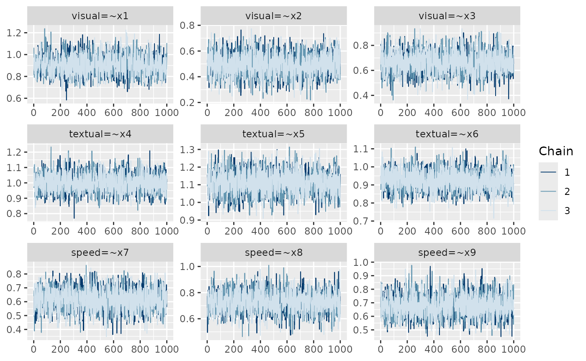

Convergence loop
Mauricio Garnier-Villarreal
Source:vignettes/convergence_loop.Rmd
convergence_loop.RmdIntroduction
In many cases you would need to run the BSEM models multiple times
until it has converged. This can take a while and you might want to have
R do it for you. This tutorial shows how to use a
while loop to increase the number of burnin samples until
the model converges, so you can let it run without having to adjust it
every time
Convergence loop
You will start by writing the model syntax as always. Then instead of
running the blavaan functions as usual, we will run them
inside the while loop as follows.
Before the loop starts you need to define a starting
BURN <- 0 number of iterations, and a convergence value
higher than the desired such as rhat <- 20.
Then the loop will be set stop when the convergence criteria
(rhat) is lower than a desired value, like
,
we specify this with while(rhat > 1.05), meaning the the
loop will continue as long as rhat is higher than 1.05.
HS.model <- ' visual =~ x1 + x2 + x3
textual =~ x4 + x5 + x6
speed =~ x7 + x8 + x9 '
BURN <- 0
rhat <- 20
while(rhat > 1.05) {
BURN <- BURN + 1000 ### increase burn in by 1000 iterations every time
fit <- bcfa(HS.model, std.lv=T,
data=HolzingerSwineford1939,
n.chains = 3, burnin = BURN,
sample=1000)
rhat <- max(blavInspect(fit, "psrf"), na.rm=T)
print(paste0("Rhat=",rhat))
}Then inside the loop we will increase the number of BURN
iterations by 1000 in this example. And after estimating the model, we
will evaluate the convergence by getting the highest estimated
,
and printing it in the screen so you will see how far is the model from
converging.
## [1] "Rhat=1.00191591415435"Note that we are only increasing the number burnin iterations, and keeping the number of saved samples the same (1000 in this case). If you want you can increase or decrease the number of saved iterations according to your case.
And you can visualize the convergence with the trace plots
plot(fit, pars = 1:9, plot.type = "trace")